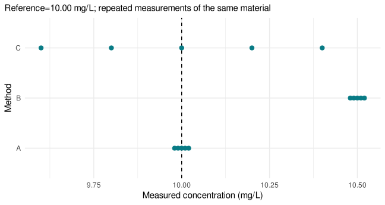
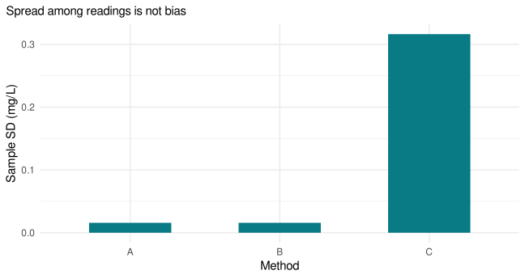
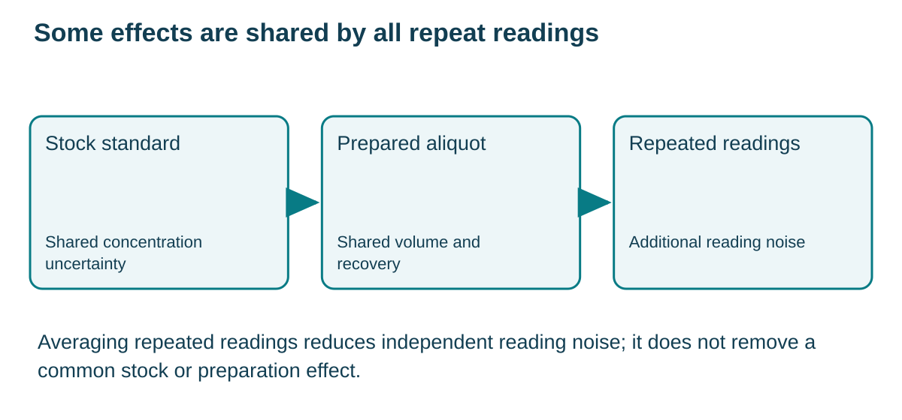
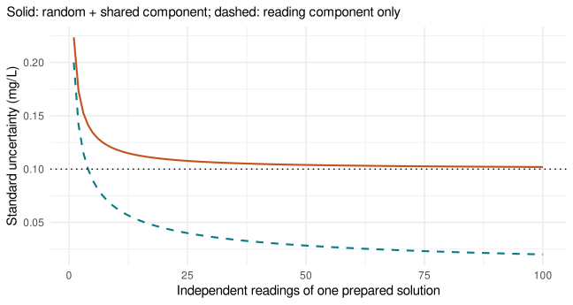
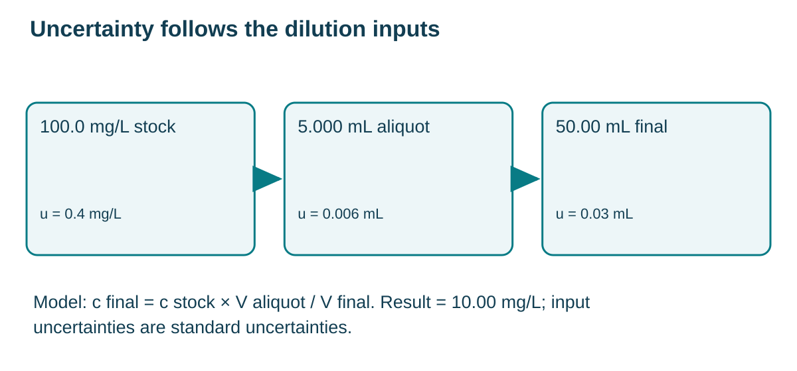
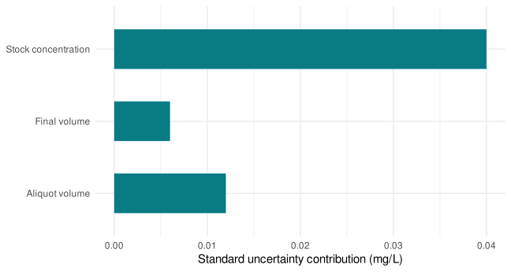

Separate spread, bias and uncertainty in a result

Repeated reference measurements: A is near 10 mg/L, B is tightly grouped near 10.5, and C is spread around 10.
The reference is 10.00 mg/L. Compare both location and spread.

A and B both have SD about 0.0158 mg/L, while C has SD about 0.316 mg/L.
A and B both have SD ≈ 0.0158 mg/L.
Repeated reference measurements: A is near 10 mg/L, B is tightly grouped near 10.5, and C is spread around 10.
B mean = 10.50 mg/L: estimated bias +0.50 mg/L.
Repeated reference measurements: A is near 10 mg/L, B is tightly grouped near 10.5, and C is spread around 10.
C mean = 10.00 mg/L, but its SD ≈ 0.316 mg/L.
It is not the observed difference from a secretly known true value.
For independent stable readings: \(u_{reading}(\bar x)=s/\sqrt n\).

Averaging repeated readings reduces independent reading noise; it does not remove a common stock or preparation effect.
A stock error is shared by every reading made from that stock.

Reading uncertainty decreases with more independent readings, while the combined uncertainty approaches a shared 0.10 mg/L floor.
Which curve keeps decreasing? Which levels off?
Averaging repeated readings reduces independent reading noise; it does not remove a common stock or preparation effect.
One collected sample, several preparations and several readings need different treatment.

Model: c final = c stock × V aliquot / V final. Result = 10.00 mg/L; input uncertainties are standard uncertainties.
\(c=c_sV_a/V_f\).
Stock: 0.4 mg/L; aliquot: 0.006 mL; final volume: 0.03 mL.

Dilution standard uncertainty contributions: stock 0.040, aliquot 0.012 and final volume 0.006 mg/L.
Stock contributes 0.040 mg/L.
Dilution standard uncertainty contributions: stock 0.040, aliquot 0.012 and final volume 0.006 mg/L.
Aliquot: 0.012 mg/L; final volume: 0.006 mg/L.
Dilution standard uncertainty contributions: stock 0.040, aliquot 0.012 and final volume 0.006 mg/L.
\(u(c)=\sqrt{0.040^2+0.012^2+0.006^2}\) = 0.04219 mg/L.
Dilution standard uncertainty contributions: stock 0.040, aliquot 0.012 and final volume 0.006 mg/L.
Would a more precise final flask solve most of this budget?
Reading uncertainty decreases with more independent readings, while the combined uncertainty approaches a shared 0.10 mg/L floor.
More independent readings reduce the reading component.
Standard uncertainty \(u\); expanded uncertainty \(U=ku\); confidence interval for a mean.
\(\bar x\pm t_{0.975,n-1}s/\sqrt n\).
Repeated reference measurements: A is near 10 mg/L, B is tightly grouped near 10.5, and C is spread around 10.
An arbitrary error bar does not correct a systematically displaced method.
10.000 mg/L; standard uncertainty 0.042 mg/L under the stated model.
Dilution standard uncertainty contributions: stock 0.040, aliquot 0.012 and final volume 0.006 mg/L.
Replace 0.4 by 0.2 mg/L. What happens to combined uncertainty?
Averaging repeated readings reduces independent reading noise; it does not remove a common stock or preparation effect.
Sampling, recovery, matrix effects and unmodelled preparation variation.
Save the calculation and a chemical interpretation in your reproducible report.
Interactive experiment · Predict, change, explain.
Analytical Chemistry · simulated teaching data